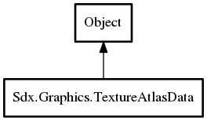

Sdx.Graphics.TextureAtlasData – ZeroG Reference Manual
Packages
ZeroG
Sdx
Graphics
TextureAtlasData
ReadTuple
ReadValue
TextureAtlasData
instance
pages
regions
tuple
TextureAtlasData
Object Hierarchy:

Description:
public
class
TextureAtlasData
:
Object
Namespace:
Sdx.Graphics
Package:
ZeroG
Content:
Static methods:
public
static
int
ReadTuple
(
DataInputStream
reader)
Returns the number of tuple values read (1, 2 or 4).
public
static
string
ReadValue
(
DataInputStream
reader)
Returns the single value
Creation methods:
public
TextureAtlasData
(
FileHandle
packFile,
FileHandle
imagesDir,
bool
flip)
Fields:
public
static
TextureAtlasData
instance
tuple used to return the parsed values
public
static
string
[]
tuple
public
List
<
Page
>
pages
public
List
<
Region
>
regions